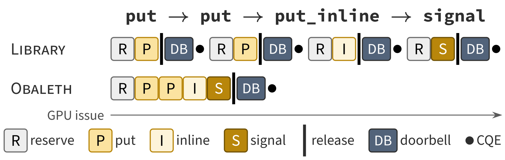
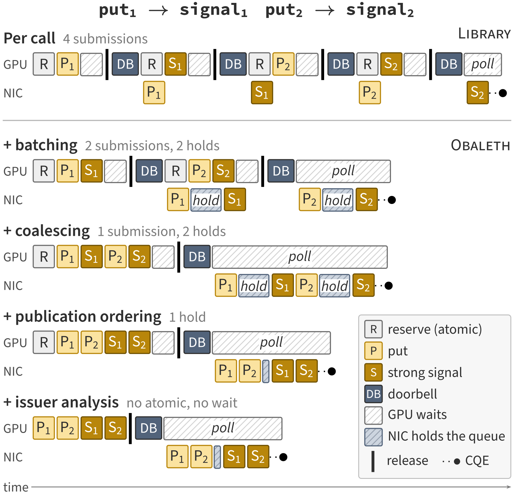
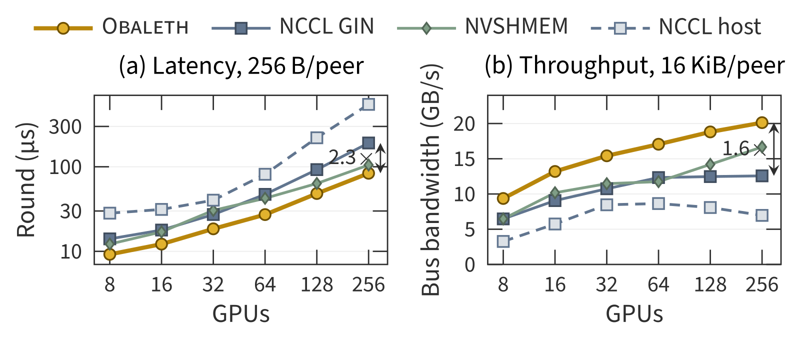

Contents · 5 sections
1Why a library pays the full posting sequence every time2Walkthrough: sixteen chains, and how the bottleneck moves to the NIC3Where it is faster than generic libraries and hand-written expert stacks4What this means for people working on GPU communication and expert parallelism5LimitationsSHARE
Sixteen independent writes share one doorbell. After you merge them, who is still slow?You are writing a fused expert-dispatch kernel: quantize a batch of tokens, send them to the GPUs that host their experts, then send each peer a count and a ready flag. If you go through a device communication library, every remote write is a complete posting sequence: reserve a queue slot with an atomics, wait for earlier reservations to be written, issue a memory fence, ring the doorbell to notify the NIC, and later poll for completion. A minimal GPU path issues an 8-byte put in 0.7 microseconds; libraries add up to 4.6 microseconds of issue time.
There is often more than one chain to the same peer. Sends to different experts are independent, yet each still pays for its own reservation and doorbell. Stack sixteen of them, and merging only the GPU-side posting may not make the round faster.
Obaleth, from Koç University and fal, puts this kind of GPU-initiated communication into the same intermediate representation as the computation, then generates device code specialized to the transport in use. Existing NVSHMEM, and NCCL GIN (NCCL's GPU-initiated interface), offer generic device functions that can be linked into a kernel and handle reservation, ordering, and completion for the general case on every call. Libraries written by hand for Mixture of Experts (MoE), such as DeepEP, retune the transport for one communication pattern and a set of NICs. Obaleth is a compiler plugin for Triton. It lowers put (a remote write), signal (publishing an epoch the peer can wait on), and wait into a NIC-agnostic Queue IR, then emits only the code that path needs.
The payoff is clearest on small messages. On H100 GPUs, 8-byte messages run at up to 3.3× NVSHMEM and 4.2× NCCL GIN; on 256 GPUs, all-to-all is 1.25× and 2.3× faster, and device memory per rank is 22 MiB against 266–584 MiB for the libraries. In vLLM, serving Qwen3-235B on 16 B200 GPUs, it answers requests 1.15–1.29× faster than DeepEP. From 64 KiB per peer, the exchange is NIC-bound, and from 1 MiB the device APIs sit within 4% of each other.
Why a library pays the full posting sequence every time
A GPU kernel can initiate communication without giving control back to the host. Inside a node it uses loads and stores over NVLink; across nodes it uses RDMA. The submitter writes a work-queue entry (WQE) into the send queue, updates a doorbell record, and rings a doorbell register on the NIC. The NIC then fetches those entries, writes the data to the peer, and, if asked, writes back a completion-queue entry.
A generic library has to support any caller, any thread geometry, and any transport, so each step is done conservatively. Figure 1 makes the contrast plain: a library pays a reservation, a release, a doorbell, and a completion per call; Obaleth posts the whole chain with one of each.

The library pays because it cannot see three facts in the kernel IR. First, what follows the call: the chunks, count, and flag sent to one peer can form a single chain, chains to different experts are independent, and the count can be inlined in the work request. Second, who else writes to the same queue: if one program is responsible for each peer, reserving a slot needs no atomic, and ringing the doorbell needs no wait for other producers. Third, how long buffers live: if a staging slot is reused only every P launches, the sender only has to poll for completion before that reuse, to confirm the NIC has finished reading, not every round.
These facts are not tied to one workload. Obaleth's job is to let the compiler see them.
Walkthrough: sixteen chains, and how the bottleneck moves to the NIC
The running example comes from the paper's Figure 4 and Section 5.3: on one endpoint (a stream of operations from one peer to another) there are two, or as many as sixteen, mutually independent chains. Only dependences declared with a token are ordered, and these chains have no such dependence. Each chain is a data write followed by a signal. The walk follows the order the compiler actually applies.
Step 1 looks at a single chain. The compiler walks each signal's after dependence backward and turns the chain into one submit at the signal and one poll at the wait(token) at the end of the chain. That wait is for sender completion: the source buffer may be overwritten. It makes no promise to the receiver. Computation and the stores that produce later chunks may sit between the writes, as long as the chain stays in one block and on one endpoint, with nothing blocking in between. On an mlx5 NIC, N commands then cost one reservation, N contiguous work-queue entries, one doorbell, and at most one completion.
Step 2 merges the sixteen independent chains into one submission. They share one reservation, one release, one doorbell, and one completion, and each keeps its own signal. Earlier chains are announced later, which is legal because the chains were never ordered with respect to one another. After the merge, GPU issue time falls from 41.5 microseconds to 3.5. The whole round only falls from 43.8 microseconds to 39.8. The GPU is no longer the bottleneck; the NIC is.
Step 3 asks what the NIC is waiting for. A signal that follows transfers is strong: it writes an epoch and also makes the preceding data visible to the receiver. On mlx5, each such signal is an ordering point. The NIC holds until the payload ahead of that signal has landed before it continues. The paper measures this cost at about 2.3 microseconds for both remote atomics and fenced writes. Laid out chain by chain, as "write 1, signal 1, write 2, signal 2, …", each signal still has the next payload sitting in front of it, so sixteen chains stall sixteen times.
Step 4 places every data write before all of the signals. Each signal still follows its own payload, so visibility is preserved. At the first signal that comes after the data, the NIC waits until all of those writes have landed; later signals have no outstanding data write ahead of them, so the submission stalls only once. The 16-chain round time falls from 39.8 microseconds to 4.3. This pass needs ordered queues. On AWS (Amazon Web Services) EFA (Elastic Fabric Adapter, a reliable but unordered NIC transport), the compiler instead retires the payload before it publishes the epoch, which costs an extra round trip.

The ablations line up with this path. With the default passes on, the 16-chain stream is 23.9× faster than with every pass off. Removing coalescing also disables ordering, and the stream slows by 5.8×. A single chain is a different story: waiting for a completion every round dominates, and completion planning defers the sender's wait until the buffer is actually about to be overwritten. In an 8-GPU all-to-all, each peer gets one put and one signal per round, so the switchable passes add only another 1.13–1.22×. Most of the remaining lead comes from lowering that is always on: straight-line code posts one already-batched put-and-signal per peer. Hoot says
The body already walked how sixteen independent chains merge into one submission, and how placing the data writes before the signals leaves the NIC holding only once. This walk is a different point: wait(reuse=2) on one chain. The source is reused every 2 iterations, and completion planning plus epoch elision (publishing a signal only on completing iterations and the last) change the polls and NIC holds in those 2 iterations. The numbers below come from the paper.
wait(reuse=2) says the source is reused every 2 iterations → completion planning polls once every k=2 iterations → epoch elision posts a signal only on the completing iteration → on a one-chain stream, completion planning is 76% of the 8.4× gain, and removing elision costs 2.4× once issue is no longer the bottleneck
- a complete-every-iteration baseline → two polls in two iterationsFigure 9's library baseline requests completion every iteration: the loop is a put followed by a signal each time, and wait(reuse=2) says the source is reused every 2 iterations. If the caller asks for completion every iteration, the library polls twice over those 2 iterations, each following strong signal is still a NIC ordering point so the NIC holds twice, and Obaleth plans the poll from the declared reuse distance.As a complete-every-iteration baseline: iterations 0 and 1 have 2 completion polls and 2 NIC holds
- completion planning → one poll every k iterationsCompletion planning turns the wait into a poll every k-th iteration, where k is the largest power of two within the reuse distance, the iterations that fit in the queue, and the transport's preferred interval (16 on mlx5 and on EFA (Elastic Fabric Adapter)), so k=2 when reuse=2. The submission requests a completion-queue entry only on the last command of the window; on mlx5, that entry retires the commands before it.k=2: 2 iterations, 1 poll and 1 completion; the NIC still holds twice
- epoch elision → S0 becomes a no-opEach iteration still has one strong signal, and thus one NIC ordering point; epoch elision publishes signals only on completing iterations and the last, turning the others into no-ops of the same size, so S0 in iteration 0 becomes a no-op and only S1 in iteration 1 remains. That is legal because the receiver's wait_signal (it waits for at least an epoch) may see an epoch up to k−1 iterations late, and a strong signal also makes earlier payloads visible; the pass skips kernels that wait on a peer.k−1=1; NIC holds fall from 2 to 1
- one-chain ablation → completion planning is most of the gainOn a stream of one chain, the default passes are 8.4× faster than with every pass off, and completion planning gives 76% of that gain. Added in pipeline order, epoch elision's waterfall gain is only 7% while GPU issue still dominates; after issuer analysis and the GPU-scope doorbell remove that cost, the NIC ordering point is the bottleneck, and dropping elision from the defaults costs 2.4×.Of the one-chain 8.4×, completion planning is 76%; once issue is gone, removing elision costs 2.4×
So on this wait(reuse=2) chain, completion planning first folds two completions into one; epoch elision then turns the first signal into a no-op, and the NIC holds only at the last signal.

Source
Paper §5.3 and Appendix Figure 9. wait(reuse=2) means the source is reused every 2 iterations; k is the largest power of two within the reuse distance, the queue depth, and the transport interval (16).Where it is faster than generic libraries and hand-written expert stacks
The H100 platform has four GPUs per node, NVLink inside the node, and 200 Gb/s InfiniBand across nodes. This machine does not let GPUs ring doorbells, so Obaleth and the libraries build the queues and work entries on the GPU and forward only the doorbell through a host thread. The evaluation uses NVSHMEM 3.4.5, because 3.8.0 is 2.1 microseconds slower per round trip on this machine.
For a two-node round trip, Tier-2 (composing these operations directly in a Triton kernel) is 9.98 microseconds at 8 bytes, against 12.74 for NCCL GIN and 13.12 for NVSHMEM. On message rate, with 64 thread blocks and one queue each, Tier-2 sends 8-byte messages at 243 million per second, 3.3× NVSHMEM and 4.2× NCCL GIN, because it rings one doorbell per window where the libraries ring one per put.
In all-to-all, each GPU exchanges with three NVLink peers inside the node and uses RDMA for the rest. At 256 bytes per peer, it is 1.32× faster than NVSHMEM's packaged collective and 1.52× faster than NCCL GIN on 8 GPUs, because this size still pays the per-message fixed cost; on 256 GPUs the factors are 1.25× and 2.3×. At 16 KiB per peer, bus bandwidth is 1.6× NCCL GIN and 1.2× NVSHMEM. From 64 KiB per peer, the time to move the payload outweighs the per-message cost, so from 1 MiB the device APIs sit within 4% of each other.

It also uses less memory, because the runtime allocates only for queues and endpoint descriptors. On 8–256 GPUs, Obaleth reserves 4–22 MiB per rank; NCCL uses 266–426 MiB, and NVSHMEM 584 MiB, of which 512 MiB is the symmetric heap it maps on every rank, however little of it is used. The all-to-all RDMA kernel uses 60 registers per thread, against 128 in the library kernels, which shows that a specialized path does not have to carry every branch a generic library needs.
The lead remains on B200 GPUs, which can ring doorbells themselves, but the gap to NCCL GIN shrinks: at 256 bytes per peer on 16 and 32 GPUs, Tier-2 is 1.11–1.16× faster than NCCL GIN and 1.24–1.52× faster than NVSHMEM. That tells you part of the larger lead over NCCL GIN on H100 comes from NCCL forwarding its doorbells through the host.
For inference, the authors hook Obaleth into vLLM expert parallelism with a 384-line adapter that only states facts vLLM already knows: the token bound, hidden size, top-k, expert placement, data type, and how the expert kernels read their inputs. No communication kernel is written or tuned by hand for this workload. On Qwen3-235B-A22B with 16 B200 GPUs at EP16 (expert parallelism of 16), compared with DeepEP 2.5.0 in its default configuration, the numbers are:
| Request rate (per second) | 1 | 2 | 4 |
|---|---|---|---|
| Answer latency (s, Obaleth / DeepEP) | 5.66 / 7.31 | 6.50 / 8.29 | 8.10 / 9.29 |
| Speedup | 1.29× | 1.28× | 1.15× |
| Time per output token (ms) | 21.9 / 28.7 | 25.9 / 33.2 | 33.4 / 37.3 |
| Time to first token, p95 (ms) | 376 / 192 | 312 / 218 | 311 / 201 |
The gain is largest in decode, because each step's exchange is small and latency-bound, and time per output token is 10–24% lower. The compiled plan has a capacity of one token, one queue per peer, and four commands per peer and phase. DeepEP keeps 128 progress channels and updates each, empty or not, so over three decode steps of Ling-1T (also expert parallelism of 16), Obaleth's NICs transmit 5.6× fewer packets, and its send and await kernels take 4.3× less GPU time than DeepEP's dispatch and combine. The p95 time to first token is worse: 1.4–2.0× the other side. From 64 tokens, DeepEP's hand-written kernels are up to 1.7× faster on Qwen3-235B; the paper attributes that cost to the compiled kernels.
What this means for people working on GPU communication and expert parallelism
If existing CUDA or CuTe kernels already call a library, Tier-1 is available: the compiler sees one operation at a time and generates a one-sided device library specialized to the transport and the GPU. A call still selects a path by peer, and branches for statically known peers fold away. To let the compiler see how computation and communication meet, you write Tier-2 Triton kernels, like the fused FP8 dispatch in the paper.
Issuer analysis is a typical case of a cost the compiler can drop only once it can see it. When several threads may post to one queue, each must reserve a slot with an atomic and, after writing its work entries, wait until earlier reservations have been written before ringing the doorbell. A library cannot rule this out, so every call pays for it. Obaleth posts each submission from one thread of its program. It then checks the index passed to endpoint: if every selection from the table is a one-to-one function of the program ID, two programs never choose the same queue, so each queue has a single issuer, the reservation becomes a plain add, and the wait before the doorbell goes away. Without the analysis, a one-chain stream is 1.6× slower and a ping-pong is 1.7 microseconds slower per round trip. NCCL offers the same fast path as an exclusive context the programmer has to request; here it is derived from the IR.
A framework can also just describe a pattern: the logical buffers, the transfers among them, and which regions each compute phase writes. Storage planning sizes each buffer to what the expert kernels actually read, recovering 16 GiB per GPU and 45% more KV-cache capacity than with the pass off, within 5% of DeepEP. Valid extents send only live rows, cutting the bytes sent by 58%.
Fusion is not automatically faster. The form in Listing 1, which packs and sends in the same kernel, runs at 0.78–0.93× the split packing kernel on 8 H100 GPUs in BF16, and at 0.44–0.82× with FP8 quantization, so packing and sending in one kernel is not always a win. The vLLM numbers above also use a single expert-parallelism configuration, at rates that saturate neither engine. Two tensor-parallel 8-GPU replicas of Qwen3-235B deliver 2.4× this Obaleth path's throughput on long reports.
Limitations
This path has no extra advantage on large messages: from 64 KiB per peer, the exchange is already NIC-bound. Libraries still lead where there is little to batch or complete, such as a single thread block, or a pure stream with no completions, where NVSHMEM can post from 128–256 threads per queue and Tier-2 posts from one.
On the inference side, the tail of time to first token is worse. A full AMD and EFA evaluation is still to come; the authors report preliminary numbers on MI355X, where a GPU-direct stream is 3.8–5.7× faster with the passes than without, and leave a complete comparison for later work. This paper is a preprint.
How did this read for you?
Hoot made a note. Thanks for the feedback.
One tap, no sign-in; tap again to undo. Only anonymous counts are kept, never who you are.
Discussion
Add experiment details, reproduction notes or a different take. Requires a GitHub sign-in.
Loading the discussion…